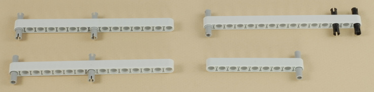
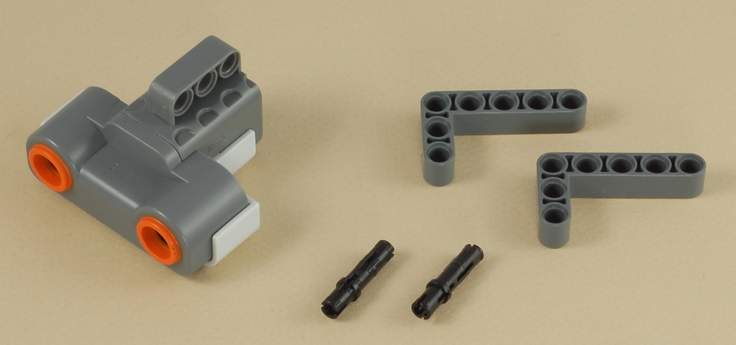
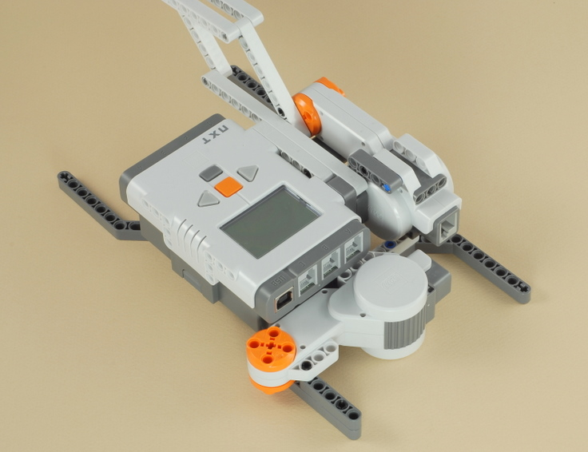

Fun Projects for your LEGO® MINDSTORMS® NXT!
|
|
Fun Projects for your LEGO® MINDSTORMS® NXT! |
| Rattlesnake |
|

1
2

3

4
Note: You must use the gray (low friction) triple pegs where shown, so that the neck unfolds easily.

5

6

7
8
| Note: Now is a good time to check to make sure that all the beams in the neck are connected together properly. The long beams in the neck should be able to easily fold up all the way as shown below. |
9
10


11
| Three wires are used in this step: The longest wire,
the shortest wire, and a medium-length wire. Connect the longest wire from the ultrasonic sensor in the head of the snake to port 1 on the NXT, routing it carefully through the neck of the snake as shown. |
Connect the shortest wire from the neck motor to port B on the NXT.
Connect the medium-length wire from the second (tail) motor to port C on the NXT.
12
Important: The round gray half bushings must be very loose on their axles so that they rattle when shaken.
13
| Design the coiled body of the snake any way you like (this is just for decoration). Here is one example. |
| You can attach your snake body starting at the tail rattle and then wrapping loosely around the NXT brick. You can peg the coils of your snake body to the four angled platform beams for stability. |
|
Rattlesnake Programming Use the program Rattlesnake for the Rattlesnake. This is a fairly simple program that shows how the NXT-G programming system's "Sequence Beam" can be used to make two parts of a program do two different things at the same time. |
Challenges
|
|
Copyright
©
2007-2009 by Dave Parker. All rights reserved. |